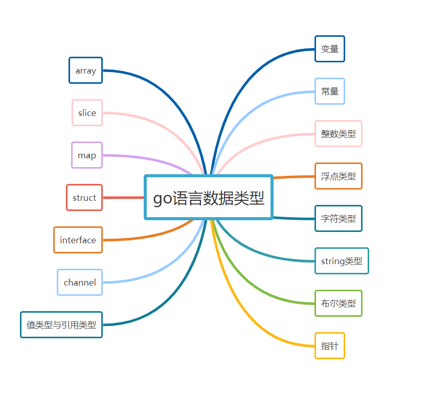
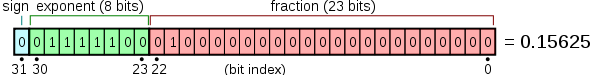

搞定go语言数据类型
本文最后更新于：2021年8月29日 上午
数据类型
先上图：

变量
格式化输出
通用：
1 | |
布尔值：
1 | |
进制数：
1 | |
浮点数与复数的两个组分：
1 | |
变量定义和使用
第一种 ：一行声明一个变量
1 | |
其中 var 是关键字（固定不变），name 是变量名，type 是类型。
使用 var ，虽然只指定了类型，但是 Go 会对其进行隐式初始化，比如 string 类型就初始化为空字符串，int 类型就初始化为0，float 就初始化为 0.0，bool类型就初始化为false，指针类型就初始化为 nil。
也可以在声明时顺便赋值。
1 | |
第二种：多个变量一起声明
声明多个变量，除了可以按照上面写成多行之外，还可以写成下面这样
1 | |
第三种：声明和初始化一个变量
使用 := （推导声明写法或者短类型声明法：编译器会自动根据右值类型推断出左值的对应类型。），可以声明一个变量，并对其进行（显式）初始化。
1 | |
但这种方法有个限制就是，只能用于函数内部
第四种：声明和初始化多个变量
1 | |
这种方法，也经常用于变量的交换
1 | |
第五种：new 函数声明一个指针变量
在这里要先讲一下，指针的相关内容。
变量分为两种 普通变量 和 指针变量
普通变量，存放的是数据本身，而指针变量存放的是数据的地址。
如下代码，age 是一个普通变量，存放的内容是 28，而 ptr 是 存放变量age值的内存地址：0xc000010098
1 | |
输出
1 | |
而这里要说的 new 函数，是 Go 里的一个内建函数。
使用表达式 new(Type) 将创建一个Type类型的匿名变量，初始化为Type类型的零值，然后返回变量地址，返回的指针类型为*Type。
1 | |
输出
1 | |
用new创建变量和普通变量声明语句方式创建变量没有什么区别，除了不需要声明一个临时变量的名字外，我们还可以在表达式中使用new(Type)。换言之，new函数类似是一种语法糖，而不是一个新的基础概念。
如下两种写法，可以说是等价的
1 | |
以上不管哪种方法，变量/常量都只能声明一次，声明多次，编译就会报错。
但也有例外，这就要说到一个特殊变量：匿名变量，也称作占位符，或者空白标识符，用下划线表示。
匿名变量，优点有三：
- 不分配内存，不占用内存空间
- 不需要你为命名无用的变量名而纠结
- 多次声明不会有任何问题
通常我们用匿名接收必须接收，但是又不会用到的值。
1 | |
原文连接：1.2 五种变量创建的方法 — Go编程时光 1.0.0 documentation (iswbm.com)]()
常量
定义常量：
1 | |
const：定义常量的关键字
constantName：常量名称
type：常量类型
value：常量的值
整数类型
Go语言中，整数类型可以分成10个类型。

int 和 uint 的区别就在于一个 u，有 u 说明是无符号，没有 u 代表有符号。
解释这个符号的区别
以 int8 和 uint8 举例，8 代表 8个bit，能表示的数值个数有 2^8 = 256。
uint8 是无符号，能表示的都是正数，0-255，刚好256个数。
int8 是有符号，既可以正数，也可以负数，那怎么办？对半分呗，-128-127，也刚好 256个数。
int8 int16 int32 int64 这几个类型的最后都有一个数值，这表明了它们能表示的数值个数是固定的。
而 int 并没有指定它的位数，说明它的大小，是可以变化的，那根据什么变化呢？
- 当你在32位的系统下，int 和
uint都占用 4个字节，也就是32位。 - 若你在64位的系统下，int 和
uint都占用 8个字节，也就是64位。
出于这个原因，在某些场景下，你应当避免使用 int 和 uint ，而使用更加精确的 int32 和 int64，比如在二进制传输、读写文件的结构描述（为了保持文件的结构不会受到不同编译目标平台字节长度的影响）
不同进制的表示方法
出于习惯，在初始化数据类型为整型的变量时，我们会使用10进制的表示法，因为它最直观，比如这样，表示整数10.
1 | |
不过，你要清楚，你一样可以使用其他进制来表示一个整数，这里以比较常用的2进制、8进制和16进制举例。
2进制：以0b或0B为前缀
1 | |
8进制：以0o或者 0O为前缀
1 | |
16进制：以0x 为前缀
1 | |
下面用一段代码分别使用二进制、8进制、16进制来表示 10 进制的数值：12
1 | |
输出如下
1 | |
以上代码用过了 fmt 包的格式化功能，你可以参考这里去看上面的代码
1 | |
浮点数
浮点数类型的值一般由整数部分、小数点“.”和小数部分组成。
其中，整数部分和小数部分均由10进制表示法表示。不过还有另一种表示方法。那就是在其中加入指数部分。指数部分由“E”或“e”以及一个带正负号的10进制数组成。比如，3.7E-2表示浮点数0.037。又比如，3.7E+1表示浮点数37。
有时候，浮点数类型值的表示也可以被简化。比如，37.0可以被简化为37。又比如，0.037可以被简化为.037。
有一点需要注意，在Go语言里，浮点数的相关部分只能由10进制表示法表示，而不能由8进制表示法或16进制表示法表示。比如，03.7表示的一定是浮点数3.7。
float32 和 float64
Go语言中提供了两种精度的浮点数 float32 和 float64。
**float32*，也即我们常说的单精度，存储占用4个字节，也即48=32位，其中1位用来符号，8位用来指数，剩下的23位表示尾数

**float64*，也即我们熟悉的双精度，存储占用8个字节，也即88=64位，其中1位用来符号，11位用来指数，剩下的52位表示尾数

那么精度是什么意思？有效位有多少位？
精度主要取决于尾数部分的位数。
对于 float32（单精度）来说，表示尾数的为23位，除去全部为0的情况以外，最小为2^-23，约等于1.19*10^-7，所以float小数部分只能精确到后面6位，加上小数点前的一位，即有效数字为7位。
同理 float64（单精度）的尾数部分为 52位，最小为2^-52，约为2.22*10^-16，所以精确到小数点后15位，加上小数点前的一位，有效位数为16位。
通过以上，可以总结出以下几点：
一、float32 和 float64 可以表示的数值很多
浮点数类型的取值范围可以从很微小到很巨大。浮点数取值范围的极限值可以在 math 包中找到：
- 常量
math.MaxFloat32表示float32能取到的最大数值，大约是3.4e38； - 常量
math.MaxFloat64表示float64能取到的最大数值，大约是1.8e308； float32和float64能表示的最小值分别为1.4e-45和4.9e-324。
二、数值很大但精度有限
人家虽然能表示的数值很大，但精度位却没有那么大。
float32的精度只能提供大约6个十进制数（表示后科学计数法后，小数点后6位）的精度float64的精度能提供大约15个十进制数（表示后科学计数法后，小数点后15位）的精度
这里的精度是什么意思呢？
比如 10000018这个数，用 float32 的类型来表示的话，由于其有效位是7位，将10000018 表示成科学计数法，就是 1.0000018 * 10^7，能精确到小数点后面6位。
此时用科学计数法表示后，小数点后有7位，刚刚满足我们的精度要求，意思是什么呢？此时你对这个数进行+1或者-1等数学运算，都能保证计算结果是精确的
1 | |
输出如下
1 | |
byte、rune与字符串
byte与rune
byte，占用1个节字，就 8 个比特位（2^8 = 256，因此 byte 的表示范围 0->255），所以它和 uint8 类型本质上没有区别，它表示的是 ACSII 表中的一个字符。
如下这段代码，分别定义了 byte 类型和 uint8 类型的变量 a 和 b
1 | |
在 ASCII 表中，由于字母 A 的ASCII 的编号为 65 ，字母 B 的ASCII 编号为 66，所以上面的代码也可以写成这样：
1 | |
他们的输出结果都是一样的。
1 | |
rune，占用4个字节，共32位比特位，所以它和 int32 本质上也没有区别。它表示的是一个 Unicode字符（Unicode是一个可以表示世界范围内的绝大部分字符的编码规范）。
1 | |
输出如下
1 | |
由于 byte 类型能表示的值是有限，只有 2^8=256 个。所以如果你想表示中文的话，你只能使用 rune 类型。
1 | |
或许你已经发现，上面我们在定义字符时，不管是 byte 还是 rune ，我都是使用单引号，而没使用双引号。
对于从 Python 转过来的人，这里一定要注意了，在 Go 中单引号与 双引号并不是等价的。
单引号用来表示字符，在上面的例子里，如果你使用双引号，就意味着你要定义一个字符串，赋值时与前面声明的会不一致，这样在编译的时候就会出错。
1 | |
上面我说了，byte 和 uint8 没有区别，rune 和 uint32 没有区别，那为什么还要多出一个 byte 和 rune 类型呢？
理由很简单，因为uint8 和 uint32 ，直观上让人以为这是一个数值，但是实际上，它也可以表示一个字符，所以为了消除这种直观错觉，就诞生了 byte 和 rune 这两个别名类型。
字符串
字符串，可以说是大家很熟悉的数据类型之一。定义方法很简单
1 | |
上面说的byte 和 rune 都是字符类型，若多个字符放在一起，就组成了字符串，也就是这里要说的 string 类型。
比如 hello ，对照 ascii 编码表，每个字母对应的编号是：104,101,108,108,111
1 | |
输出如下，str和 mystr输出一样，说明了 string 的本质，其实是一个 byte数组
1 | |
表示字符串除了双引号，也可以用反引号。
大多情况下，二者并没有区别，但如果你的字符串中有转义字符\ ，这里就要注意了，它们是有区别的。
使用反引号包裹的字符串，相当于 Python 中的 raw 字符串，会忽略里面的转义。
比如我想表示 \r\n 这个 字符串，使用双引号是这样写的，这种叫解释型表示法
1 | |
而使用反引号，就方便多了，所见即所得，这种叫原生型表示法
1 | |
他们的打印结果 都是一样的
1 | |
同时反引号可以不写换行符（因为没法写）来表示一个多行的字符串。
1 | |
输出如下
1 | |
数组和切片
数组
数组是一个由固定长度的特定类型元素组成的序列，一个数组可以由零个或多个元素组成。因为数组的长度是固定的，所以在Go语言中很少直接使用数组。
声明数组，并给该数组里的每个元素赋值（索引值的最小有效值和其他大多数语言一样是 0，不是1）
1 | |
声明并直接初始化数组
1 | |
上面的 3 表示数组的元素个数 ，万一你哪天想往该数组中增加元素，你得对应修改这个数字，为了避免这种硬编码，你可以这样写，使用 ... 让Go语言自己根据实际情况来分配空间。
1 | |
[3]int 和 [4]int 虽然都是数组，但他们却是不同的类型，使用 fmt 的 %T 可以查得。
1 | |
输出 如下
1 | |
如果你觉得每次写 [3]int 有点麻烦，你可以为 [3]int 定义一个类型字面量，也就是别名类型。
使用 type 关键字可以定义一个类型字面量，后面只要你想定义一个容器大小为3，元素类型为int的数组 ，都可以使用这个别名类型。
1 | |
输出 如下
1 | |
其实定义数组还有一种偷懒的方法，比如下面这行代码
1 | |
打印 arr，会是
1 | |
可以看出[4]int{2:3}，4表示数组有4个元素，2 和 3 分别表示该数组索引为2（初始索引为0）的值为3，而其他没有指定值的，就是 int 类型的零值，即0。
切片
切片（Slice）与数组一样，也是可以容纳若干类型相同的元素的容器。与数组不同的是，无法通过切片类型来确定其值的长度。每个切片值都会将数组作为其底层数据结构。我们也把这样的数组称为切片的底层数组。
切片是对数组的一个连续片段的引用，所以切片是一个引用类型，这个片段可以是整个数组，也可以是由起始和终止索引标识的一些项的子集，需要注意的是，终止索引标识的项不包括在切片内（意思是这是个左闭右开的区间）
1 | |
输出 如下
1 | |
切片的构造，有四种方式
对数组进行片段截取，主要有如下两种写法
1
2
3
4
5
6
7
8
9
10// 定义一个数组
myarr := [5]int{1,2,3,4,5}
// 【第一种】
// 1 表示从索引1开始，直到到索引为 2 (3-1)的元素
mysli1 := myarr[1:3]
// 【第二种】
// 1 表示从索引1开始，直到到索引为 2 (3-1)的元素
mysli2 := myarr[1:3:4]如果你把上面的
mysli1和mysli2打印出来，会发现他们居然是一样的。那第二种的myarr[1:3:4]的 4有什么用呢？在切片时，若不指定第三个数，那么切片终止索引会一直到原数组的最后一个数。而如果指定了第三个数，那么切片终止索引只会到原数组的该索引值。
用下面这段代码来验证一下
1
2
3
4
5
6
7
8
9
10
11
12
13
14
15
16package main
import "fmt"
func main(){
myarr := [5]int{1,2,3,4,5}
fmt.Printf("myarr 的长度为：%d，容量为：%d\n", len(myarr), cap(myarr))
mysli1 := myarr[1:3]
fmt.Printf("mysli1 的长度为：%d，容量为：%d\n", len(mysli1), cap(mysli1))
fmt.Println(mysli1)
mysli2 := myarr[1:3:4]
fmt.Printf("mysli2 的长度为：%d，容量为：%d\n", len(mysli2), cap(mysli2))
fmt.Println(mysli2)
}输出如下，说明切片的第三个数，影响的只是切片的容量，而不会影响长度
1
2
3
4
5myarr 的长度为：5，容量为：5
mysli1 的长度为：2，容量为：4
[2 3]
mysli2 的长度为：2，容量为：3
[2 3]从头声明赋值（例子如下）
1 | |
使用 make 函数构造，make 函数的格式：
make( []Type, size, cap )这个函数刚好指出了，一个切片具备的三个要素：类型（Type），长度（size），容量（cap）
1 | |
输出 如下
1 | |
使用和数组一样，偷懒的方法
1
2
3
4
5
6
7
8
9import (
"fmt"
)
func main() {
a := []int{4:2}
fmt.Println(a)
fmt.Println(len(a), cap(a))
}输出如下
1
2[0 0 0 0 2]
5 5
关于 len 和 cap 的概念，可能不好理解 ，这里举个例子：
- 公司名，相当于字面量，也就是变量名。
- 公司里的所有工位，相当于已分配到的内存空间
- 公司里的员工，相当于元素。
- cap 代表你这个公司最多可以容纳多少员工
- len 代表你这个公司当前有多少个员工
由于 切片是引用类型，所以你不对它进行赋值的话，它的零值（默认值）是 nil
1 | |
数组 与 切片 有相同点，它们都是可以容纳若干类型相同的元素的容器
也有不同点，数组的容器大小固定，而切片本身是引用类型，它更像是 Python 中的 list ，我们可以对它 append 进行元素的添加。
1 | |
输出 如下
1 | |
字典与布尔类型
字典
字典（Map 类型），是由若干个 key:value 这样的键值对映射组合在一起的数据结构。
它是哈希表的一个实现，这就要求它的每个映射里的key，都是唯一的，可以使用 == 和 != 来进行判等操作，换句话说就是key必须是可哈希的。
什么叫可哈希的？简单来说，一个不可变对象，都可以用一个哈希值来唯一表示，这样的不可变对象，比如字符串类型的对象（可以说除了切片、 字典，函数之外的其他内建类型都算）。
意思就是，你的 key 不能是切片，不能是字典，不能是函数。。
字典由key和value组成，它们各自有各自的类型。
在声明字典时，必须指定好你的key和value是什么类型的，然后使用 map 关键字来告诉Go这是一个字典。
1 | |
声明初始化字典
三种声明并初始化字典的方法
1 | |
要注意的是，第一种方法如果拆分成多步（声明、初始化、再赋值），和其他两种有很大的不一样了，相对会比较麻烦。
1 | |
字典的相关操作
添加元素
1 | |
更新元素，若key已存在，则直接更新value
1 | |
读取元素，直接使用 [key] 即可 ，如果 key 不存在，也不报错，会返回其value-type 的零值。
1 | |
删除元素，使用 delete 函数，如果 key 不存在，delete 函数会静默处理，不会报错。
1 | |
当访问一个不存在的key时，并不会直接报错，而是会返回这个 value 的零值，如果 value的类型是int，就返回0。
1 | |
判断 key 是否存在
当key不存在，会返回value-type的零值 ，所以你不能通过返回的结果是否是零值来判断对应的 key 是否存在，因为 key 对应的 value 值可能恰好就是零值。
其实字典的下标读取可以返回两个值，使用第二个返回值都表示对应的 key 是否存在，若存在ok为true，若不存在，则ok为false
1 | |
我们将上面的代码再优化一下
1 | |
如何对字典进行循环
Go 语言中没有提供类似 Python 的 keys() 和 values() 这样方便的函数，想要获取，你得自己循环。
循环还分三种
- 获取 key 和 value
1 | |
- 只获取key，这里注意不用占用符。
1 | |
- 只获取 value，用一个占位符替代。
1 | |
布尔类型
关于布尔值，无非就两个值：true 和 false。只是这两个值，在不同的语言里可能不同。
在 Python 中，真值用 True 表示，与 1 相等，假值用 False 表示，与 0 相等
1 | |
而在 Go 中，真值用 true 表示，不但不与 1 相等，并且更加严格，不同类型无法进行比较，而假值用 false 表示，同样与 0 无法比较。
Go 中确实不如 Python 那样灵活，bool 与 int 不能直接转换，如果要转换，需要你自己实现函数。
bool 转 int
1 | |
int 转 bool
1 | |
在 Python 中使用 not 对逻辑值取反，而 Go 中使用 ! 符号
1 | |
一个 if 判断语句，有可能不只一个判断条件，在 Python 中是使用 and 和 or 来执行逻辑运算
1 | |
而在 Go 语言中，则使用 && 表示且，用 || 表示或，并且有短路行为（即左边表达式已经可以确认整个表达式的值，那么右边将不会再被求值。
1 | |
指针
什么是指针
当我们定义一个变量 name
1 | |
此时，name 是变量名，它只是编程语言中方便程序员编写和理解代码的一个标签。
当我们访问这个标签时，机算机会返回给我们它指向的内存地址里存储的值：hello。
出于某些需要，我们会将这个内存地址赋值给另一个变量名，通常叫做 ptr（pointer的简写），而这个变量，我们称之为指针变量。
换句话说，指针变量（一个标签）的值是指针，也就是内存地址。
根据变量指向的值，是否是内存地址，我把变量分为两种：
- 普通变量：存数据值本身
- 指针变量：存值的内存地址
指针的创建
指针创建有三种方法
第一种方法
先定义对应的变量，再通过变量取得内存地址，创建指针
1 | |
第二种方法
先创建指针，分配好内存后，再给指针指向的内存地址写入对应的值。
1 | |
第三种方法
先声明一个指针变量，再从其他变量取得内存地址赋值给它
1 | |
上面的三段代码中，指针的操作都离不开这两个符号：
&：从一个普通变量中取得内存地址*：当*在赋值操作符（=）的右边，是从一个指针变量中取得变量值，当*在赋值操作符（=）的左边，是指该指针指向的变量
1 | |
输出如下
1 | |
要想打印指针指向的内存地址，方法有两种
1 | |
指针的类型
我们知道字符串的类型是 string，整型是int，那么指针如何表示呢？
写段代码试验一下就知道了
1 | |
输出如下，可以发现用 *+所指向变量值的数据类型，就是对应的指针类型。
1 | |
所以若我们定义一个只接收指针类型的参数的函数，可以这么写
1 | |
指针的零值
当指针声明后，没有进行初始化，其零值是 nil。
1 | |
输出如下
1 | |
指针与切片
切片与指针一样，都是引用类型。
如果我们想通过一个函数改变一个数组的值，有两种方法
- 将这个数组的切片做为参数传给函数
- 将这个数组的指针做为参数传给函数
尽管二者都可以实现我们的目的，但是按照 Go 语言的使用习惯，建议使用第一种方法，因为第一种方法，写出来的代码会更加简洁，易读。具体你可以参数下面两种方法的代码实现
使用切片
1 | |
使用指针
1 | |
本博客所有文章除特别声明外，均采用 CC BY-SA 4.0 协议 ，转载请注明出处！